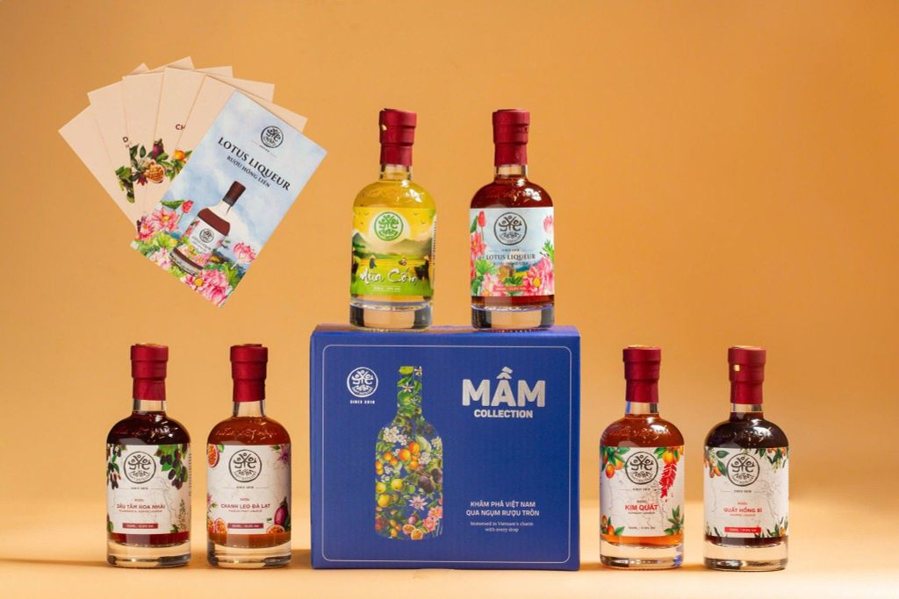

RƯỢU SARU
Cửa hàng rượu Tây Bắc được thành lập với niềm đam mê với hương vị núi rừng đặc sắc của miền Tây Bắc. Chúng tôi mang đến những sản phẩm rượu chất lượng cao, không chỉ là đồ uống mà còn là câu chuyện văn hóa và truyền thống của đồng bào vùng cao.
Qua thời gian, cửa hàng đã không ngừng mở rộng quy mô và đa dạng hóa sản phẩm, luôn giữ vững chất lượng và sự tin yêu của khách hàng. Với sứ mệnh lan tỏa hương vị độc đáo, chúng tôi cam kết mang đến cho khách hàng những trải nghiệm không thể nào quên.

1
KHỞI XƯỚNG
Năm 2020, cửa hàng bắt đầu chỉ là một cơ sở nhỏ, với mục tiêu cung cấp các loại rượu chất lượng cao đến tay người tiêu dùng do các nghệ nhân lành nghề chế biến. Chủ cửa hàng đã nghiên cứu thị trường, xác định đối tượng khách hàng tiềm năng và lựa chọn vị trí địa lý thuận lợi cho việc kinh doanh mở rộng trong tương lai.
2
THÀNH LẬP
Cửa hàng chính thức khai trương vào đầu năm 2021. Sự kiện này thu hút sự quan tâm của cộng đồng với nhiều chương trình khuyến mãi hấp dẫn. Khách hàng lần đầu tiên được trải nghiệm chất lượng và đa dạng của các sản phẩm rượu.
3
MỞ RỘNG
Sau một năm hoạt động, cửa hàng quyết định mở rộng danh mục sản phẩm, bao gồm thêm nhiều loại rượu ngoại, rượu truyền thống và các phụ kiện liên quan đến rượu. Điều này giúp tăng độ nhận diện thương hiệu và thu hút thêm khách hàng.
4
KINH DOANH TRỰC TUYẾN
Năm 2023, cửa hàng bắt đầu triển khai dịch vụ bán hàng trực tuyến, tận dụng sự phát triển của công nghệ và xu hướng tiêu dùng mới. Việc này không chỉ giúp tăng doanh thu mà còn tạo điều kiện thuận lợi cho khách hàng trong việc mua sắm.